# force (per unit mass) of a harmonic oscillator
f_ho <- function(t, x, k){
return(-k * x)
}5A. Integrators for second-order ODEs
Molecular dynamics (MD) simulates the motion of interacting particles by integrating Newton’s equation of motion forward in time (Frenkel and Smit 2023). Before adding the complications of many particles and realistic forces, this chapter develops the integrators themselves on the simplest mechanical system, a one-dimensional harmonic oscillator.
Newton’s second law relates a particle’s acceleration to the force acting on it,
\[ \frac{d^2 x(t)}{dt^2} = \frac{F(x, t)}{m} = f(x, t) . \tag{1} \]
Here \(x\) is the position, \(t\) is time, \(F\) is the force, and \(m\) is the mass. We write \(f = F/m\) (the acceleration, or force per unit mass) to keep the notation compact. A second-order ODE can always be recast as a coupled pair of first-order ODEs by introducing the velocity \(v = dx/dt\),
\[ \begin{cases} \dfrac{dv}{dt} = f \\[2mm] \dfrac{dx}{dt} = v \end{cases} \tag{2} \]
The integrators below advance this pair step by step. Throughout, \(h\) is the time step size, and a subscript \(n\) denotes a quantity evaluated at time \(t_n = t_0 + n h\), so \(f_n = f(x_n, t_n)\).
5A.1 Modeling a harmonic oscillator
We test each integrator on the harmonic oscillator, a mass on a spring of stiffness \(k\), whose force is linear in the displacement,
\[ f(x) = -k x . \]
Its exact motion is a pure sinusoid with a constant energy, so any growth in amplitude or drift in energy that appears in a simulation is a numerical artifact we can spot at a glance.
NoteRecipe 5A.1.1
Objective. Set up a harmonic oscillator as the test system for comparing integrators, and state what a correct simulation must preserve.
Model. A mass on a spring of stiffness k, d^2x/dt^2 = -k*x, written as the pair dx/dt = v, dv/dt = -k*x; the energy per unit mass e = 0.5*k*x^2 + 0.5*v^2 is exactly constant for the true motion.
Method. Direct evaluation of the force f(x) = -k*x; the numerical integrators come in the following sections.
Test. k = 0.1; initial displacement x0 = 1, velocity v0 = 2.
Show. A plot of the exact oscillator motion x(t) and its constant energy, as the reference to match.
Verification. The exact motion is a pure sinusoid at constant energy, so any amplitude growth or energy drift in a simulation is a numerical artifact.
R implementation
Python implementation
import numpy as np
import matplotlib.pyplot as plt
# force (per unit mass) of a harmonic oscillator
def f_ho(t, x, k):
return -k * x5A.2 Euler method
The Euler method carries over directly from the first-order ODE version: advance both the velocity and the position by one step using their current derivatives,
\[ \begin{aligned} v_{n+1} &= v_n + h f_n \\ x_{n+1} &= x_n + h v_n . \end{aligned} \]
To judge a simulation we track the massic energy (energy per unit mass), \(e = \tfrac{1}{2} k x^2 + \tfrac{1}{2} v^2\), which is exactly conserved for the true oscillator. We run each integrator with a small step (\(h = 0.01\)) and a larger one (\(h = 0.1\)) from the same initial condition.
NoteRecipe 5A.2.1
Objective. Integrate the harmonic oscillator with the Euler method and check whether it conserves energy.
Model. A mass on a spring of stiffness k, d^2x/dt^2 = -k*x, written as the pair dx/dt = v, dv/dt = -k*x; the energy per unit mass e = 0.5*k*x^2 + 0.5*v^2 is exactly constant for the true motion.
Method. The explicit (forward) Euler integrator for Newton’s equations, updating velocity then position, v_next = v + dt*f, x_next = x + dt*v.
Test. k = 0.1, initial x0 = 1, v0 = 2, to t = 100; step sizes dt = 0.01 and dt = 0.1.
Show. Plots of x(t) and the energy e(t) at dt = 0.01 and dt = 0.1.
Verification. Euler does not conserve energy: at dt = 0.1 the amplitude and energy grow steadily, and even at dt = 0.01 the energy drifts slowly upward.
R implementation
# Euler integrator for Newton's equation of motion (explicit v, then x)
euler_md <- function(f, t0, x0, v0, t.total, dt, ...){
# f: acceleration function f(t, x, ...); x0, v0: initial position and velocity
t_all <- seq(t0, t.total, by = dt)
n_all <- length(t_all)
x_all <- numeric(n_all); v_all <- numeric(n_all)
x_all[1] <- x0; v_all[1] <- v0
for (i in 1:(n_all - 1)) {
v_all[i+1] <- v_all[i] + dt * f(t_all[i], x_all[i], ...)
x_all[i+1] <- x_all[i] + dt * v_all[i]
}
return(cbind(t_all, x_all, v_all)) # columns: t, x, v
}
# small step: reasonable oscillation
dt1 <- 0.01; dt2 <- 0.1; k <- 0.1
result_ho_euler <- euler_md(f = f_ho, t0 = 0, x0 = 1, v0 = 2, t.total = 100, dt = dt1, k = k)
plot(result_ho_euler[,1], result_ho_euler[,2], type = "l", col = 2,
xlab = "t", ylab = "values", xlim = c(0,100), ylim = c(-10,10))
lines(result_ho_euler[,1], result_ho_euler[,3], col = 4)
legend("topleft", inset = 0.02, legend = c("x","v"), col = c(2,4), lty = 1, cex = 0.8)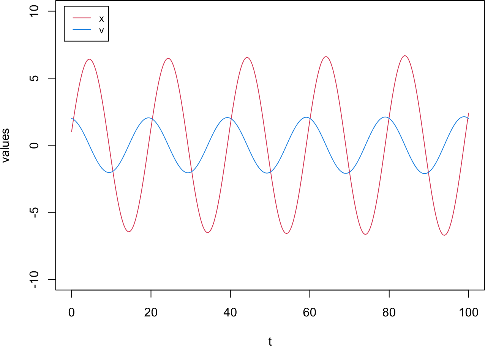
# larger step: the trajectory drifts outward
result_ho_euler2 <- euler_md(f = f_ho, t0 = 0, x0 = 1, v0 = 2, t.total = 100, dt = dt2, k = k)
plot(result_ho_euler2[,1], result_ho_euler2[,2], type = "l", col = 2,
xlab = "t", ylab = "values", xlim = c(0,100), ylim = c(-10,10))
lines(result_ho_euler2[,1], result_ho_euler2[,3], col = 4)
legend("topleft", inset = 0.02, legend = c("x","v"), col = c(2,4), lty = 1, cex = 0.8)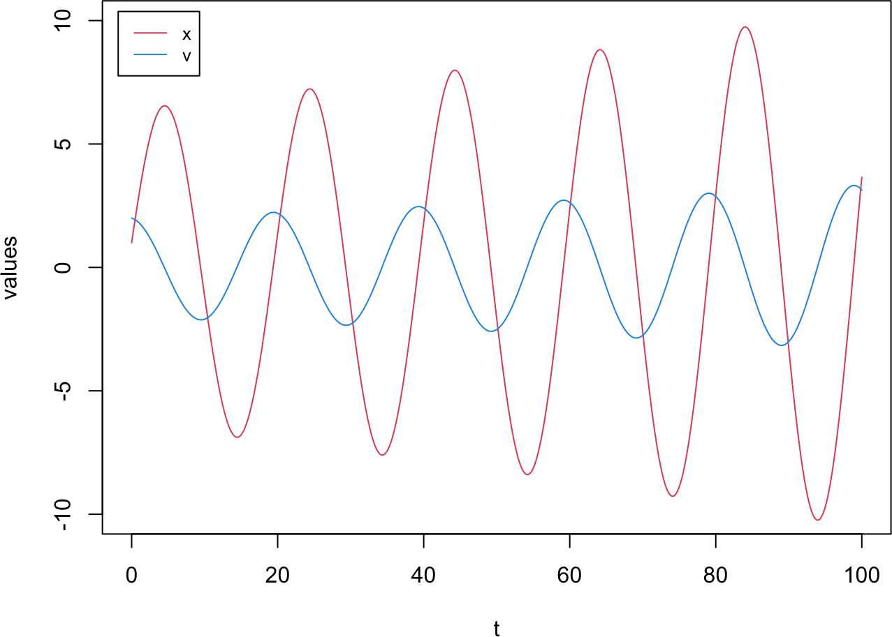
# massic energy over time for both step sizes
energy_ho <- function(result, k) {
# result: matrix with columns (t, x, v); k: spring constant
potential_e <- 0.5 * k * result[,2]^2
kinetic_e <- 0.5 * result[,3]^2
return(potential_e + kinetic_e)
}
plot(result_ho_euler[,1], energy_ho(result_ho_euler, k), type = "l", col = 2,
xlab = "t", ylab = "E", xlim = c(0,100), ylim = c(0,6))
lines(result_ho_euler2[,1], energy_ho(result_ho_euler2, k), col = 4)
legend("topleft", inset = 0.02, legend = c("dt = 0.01","dt = 0.1"), col = c(2,4), lty = 1, cex = 0.8)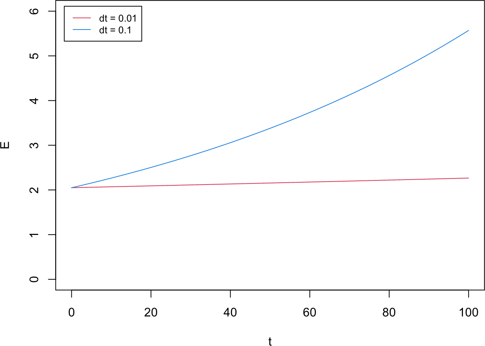
Python implementation
# Euler integrator for Newton's equation of motion (explicit v, then x)
def euler_md(f, t0, x0, v0, t_total, dt, **kwargs):
# f: acceleration function f(t, x, ...); x0, v0: initial position and velocity
t_all = np.arange(t0, t_total + dt, dt)
n_all = len(t_all)
x_all = np.zeros(n_all); v_all = np.zeros(n_all)
x_all[0] = x0; v_all[0] = v0
for i in range(n_all - 1):
v_all[i+1] = v_all[i] + dt * f(t_all[i], x_all[i], **kwargs)
x_all[i+1] = x_all[i] + dt * v_all[i]
return np.column_stack((t_all, x_all, v_all)) # columns: t, x, v
# small step: reasonable oscillation
dt1, dt2, k = 0.01, 0.1, 0.1
result_ho_euler = euler_md(f_ho, 0, 1, 2, 100, dt1, k=k)
plt.plot(result_ho_euler[:,0], result_ho_euler[:,1], color="red", label="x")
plt.plot(result_ho_euler[:,0], result_ho_euler[:,2], color="blue", label="v")
plt.xlabel("t"); plt.ylabel("values"); plt.xlim(0,100); plt.ylim(-10,10)Text(0.5, 0, 't')
Text(0, 0.5, 'values')
(0.0, 100.0)
(-10.0, 10.0)plt.legend(loc="upper left"); plt.show()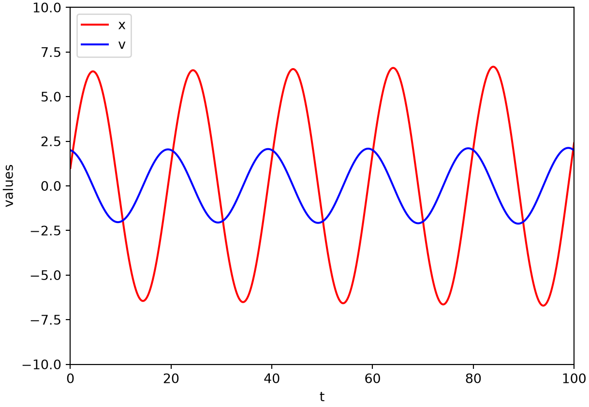
# larger step: the trajectory drifts outward
result_ho_euler2 = euler_md(f_ho, 0, 1, 2, 100, dt2, k=k)
plt.plot(result_ho_euler2[:,0], result_ho_euler2[:,1], color="red", label="x")
plt.plot(result_ho_euler2[:,0], result_ho_euler2[:,2], color="blue", label="v")
plt.xlabel("t"); plt.ylabel("values"); plt.xlim(0,100); plt.ylim(-10,10)Text(0.5, 0, 't')
Text(0, 0.5, 'values')
(0.0, 100.0)
(-10.0, 10.0)plt.legend(loc="upper left"); plt.show()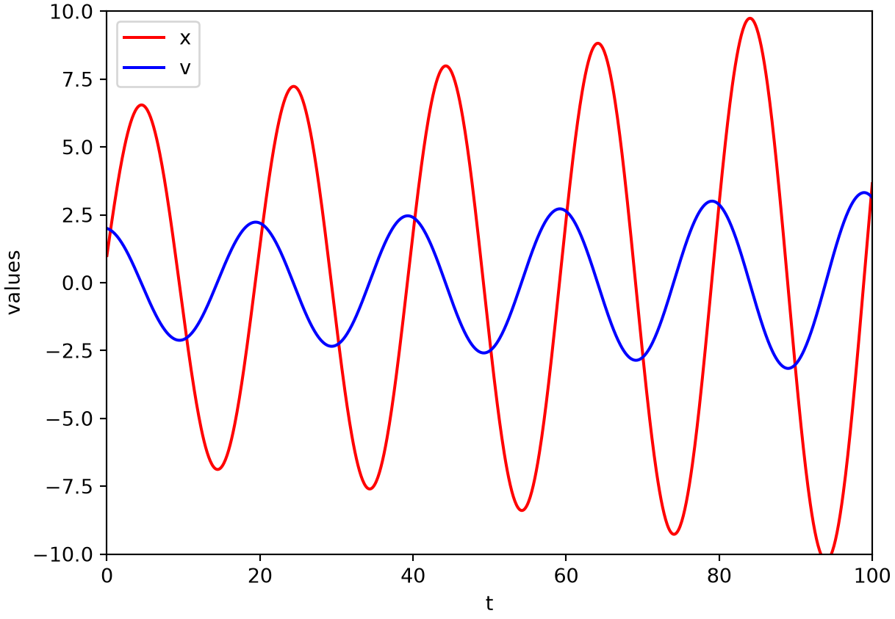
# massic energy over time for both step sizes
def energy_ho(result, k):
# result: matrix with columns (t, x, v); k: spring constant
potential_e = 0.5 * k * result[:,1]**2
kinetic_e = 0.5 * result[:,2]**2
return potential_e + kinetic_e
plt.plot(result_ho_euler[:,0], energy_ho(result_ho_euler, k), color="red", label="dt = 0.01")
plt.plot(result_ho_euler2[:,0], energy_ho(result_ho_euler2, k), color="blue", label="dt = 0.1")
plt.xlabel("t"); plt.ylabel("E"); plt.xlim(0,100); plt.ylim(0,6)Text(0.5, 0, 't')
Text(0, 0.5, 'E')
(0.0, 100.0)
(0.0, 6.0)plt.legend(loc="upper left"); plt.show()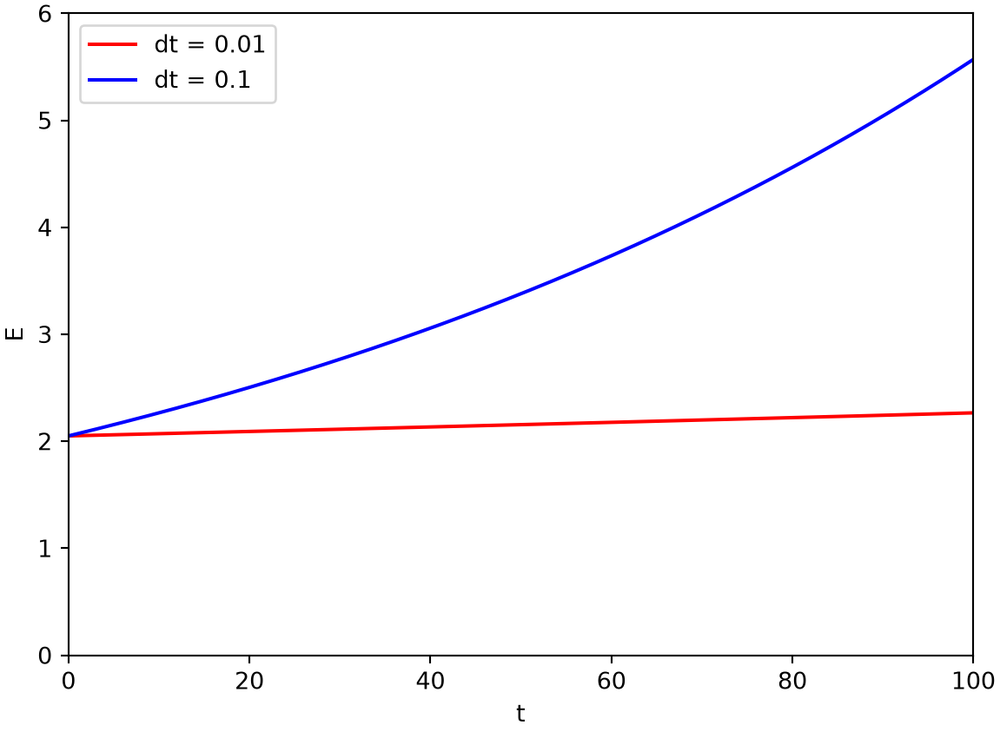
With a small step the simulation reproduces a clean harmonic oscillation, but at the larger step the trajectory swings ever wider. The energy makes the problem precise: the Euler method does not conserve it. At \(h = 0.1\) the energy grows steadily, and even at \(h = 0.01\) it drifts slowly upward rather than staying constant. A good MD integrator should instead keep the energy bounded over long runs.
Symplectic Euler method
Two properties separate a good MD integrator from a poor one: it should preserve the symplectic form (which keeps the energy bounded) and be time-reversible (so the motion can be run backward). The plain Euler method has neither. A tiny change, evaluating the position update with the new velocity instead of the old one,
\[ \begin{aligned} v_{n+1} &= v_n + h f_n \\ x_{n+1} &= x_n + h v_{n+1} , \end{aligned} \]
makes the method symplectic (though still not time-reversible). Its implementation and analysis are left as an exercise.
5A.3 Leapfrog method
The leapfrog method is a second-order integrator that stores the velocity at half-integer time steps, so that position and velocity “leap” over each other,
\[ \begin{aligned} x_{n+1} &= x_n + h v_{n+1/2} \\ v_{n+3/2} &= v_{n+1/2} + h f_{n+1} . \end{aligned} \]
It needs the position \(x_0\) and the half-step velocity \(v_{1/2}\) to start; the latter is obtained from the initial velocity by a half Euler step, \(v_{1/2} = v_0 + \tfrac{1}{2} h f_0\).
NoteRecipe 5A.3.1
Objective. Integrate the harmonic oscillator with the leapfrog method and compare its energy behavior to Euler.
Model. A mass on a spring of stiffness k, d^2x/dt^2 = -k*x, written as the pair dx/dt = v, dv/dt = -k*x; the energy per unit mass e = 0.5*k*x^2 + 0.5*v^2 is exactly constant for the true motion.
Method. The leapfrog integrator, carrying velocity at half-integer steps: a startup half-step v_half = v0 + 0.5*dt*f0, then x_next = x + dt*v_half and v_next_half = v_half + dt*f_next.
Test. k = 0.1, initial x0 = 1, v0 = 2, to t = 100; step sizes dt = 0.01 and dt = 0.1.
Show. Plots of x(t) and the energy e(t) for leapfrog at both step sizes.
Verification. Leapfrog energy does not drift even at the large step (it is symplectic and time-reversible); a small energy ripple at dt = 0.1 comes only from x and v being stored at staggered times.
R implementation
# Leapfrog integrator: v is stored at half steps (n + 1/2)
leapfrog <- function(f, t0, x0, v0, t.total, dt, ...){
t_all <- seq(t0, t.total, by = dt)
n_all <- length(t_all)
x_all <- numeric(n_all); v_all <- numeric(n_all)
x_all[1] <- x0
v_all[1] <- v0 + 0.5 * dt * f(t_all[1], x_all[1], ...) # half step to v_{1/2}
for (i in 1:(n_all - 1)) {
x_all[i+1] <- x_all[i] + dt * v_all[i]
v_all[i+1] <- v_all[i] + dt * f(t_all[i+1], x_all[i+1], ...)
}
return(cbind(t_all, x_all, v_all))
}
# trajectories at the two step sizes (v is shifted by half a step when plotted)
result_ho_leapfrog <- leapfrog(f = f_ho, t0 = 0, x0 = 1, v0 = 2, t.total = 100, dt = dt1, k = k)
result_ho_leapfrog2 <- leapfrog(f = f_ho, t0 = 0, x0 = 1, v0 = 2, t.total = 100, dt = dt2, k = k)
plot(result_ho_leapfrog[,1], result_ho_leapfrog[,2], type = "l", col = 2,
xlab = "t", ylab = "values", xlim = c(0,100), ylim = c(-10,10))
lines(result_ho_leapfrog[,1] + 0.5 * dt1, result_ho_leapfrog[,3], col = 4)
legend("topleft", inset = 0.02, legend = c("x","v"), col = c(2,4), lty = 1, cex = 0.8)# massic energy: bounded even at the large step size
plot(result_ho_leapfrog[,1], energy_ho(result_ho_leapfrog, k), type = "l", col = 2,
xlab = "t", ylab = "E", xlim = c(0,100), ylim = c(0,6))
lines(result_ho_leapfrog2[,1], energy_ho(result_ho_leapfrog2, k), col = 4)
legend("topleft", inset = 0.02, legend = c("dt = 0.01","dt = 0.1"), col = c(2,4), lty = 1, cex = 0.8)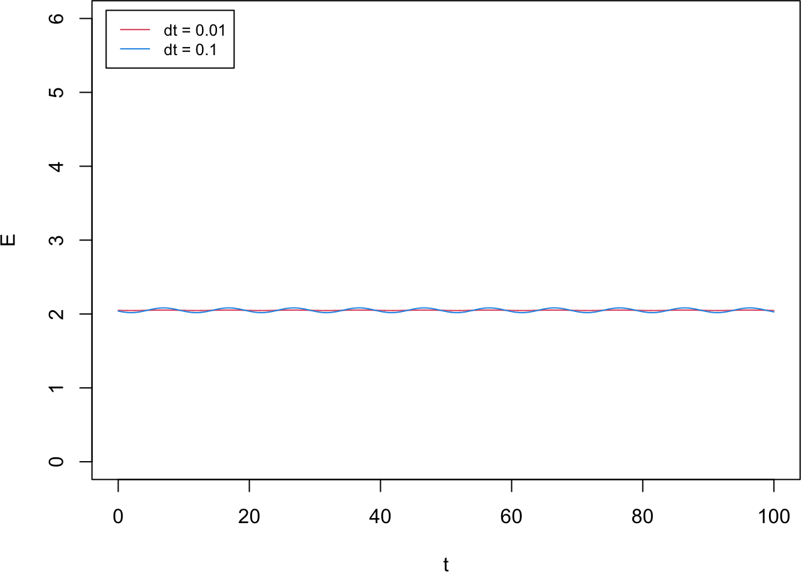
Python implementation
# Leapfrog integrator: v is stored at half steps (n + 1/2)
def leapfrog(f, t0, x0, v0, t_total, dt, **kwargs):
t_all = np.arange(t0, t_total + dt, dt)
n_all = len(t_all)
x_all = np.zeros(n_all); v_all = np.zeros(n_all)
x_all[0] = x0
v_all[0] = v0 + 0.5 * dt * f(t0, x0, **kwargs) # half step to v_{1/2}
for i in range(1, n_all):
x_all[i] = x_all[i-1] + dt * v_all[i-1]
v_all[i] = v_all[i-1] + dt * f(t_all[i], x_all[i], **kwargs)
return np.column_stack((t_all, x_all, v_all))
# trajectories at the two step sizes (v is shifted by half a step when plotted)
result_ho_leapfrog = leapfrog(f_ho, 0, 1, 2, 100, dt1, k=k)
result_ho_leapfrog2 = leapfrog(f_ho, 0, 1, 2, 100, dt2, k=k)
plt.plot(result_ho_leapfrog[:,0], result_ho_leapfrog[:,1], color="red", label="x")
plt.plot(result_ho_leapfrog[:,0] + 0.5 * dt1, result_ho_leapfrog[:,2], color="blue", label="v")
plt.xlabel("t"); plt.ylabel("values"); plt.xlim(0,100); plt.ylim(-10,10)Text(0.5, 0, 't')
Text(0, 0.5, 'values')
(0.0, 100.0)
(-10.0, 10.0)plt.legend(loc="upper left"); plt.show()# massic energy: bounded even at the large step size
plt.plot(result_ho_leapfrog[:,0], energy_ho(result_ho_leapfrog, k), color="red", label="dt = 0.01")
plt.plot(result_ho_leapfrog2[:,0], energy_ho(result_ho_leapfrog2, k), color="blue", label="dt = 0.1")
plt.xlabel("t"); plt.ylabel("E"); plt.xlim(0,100); plt.ylim(0,6)Text(0.5, 0, 't')
Text(0, 0.5, 'E')
(0.0, 100.0)
(0.0, 6.0)plt.legend(loc="upper left"); plt.show()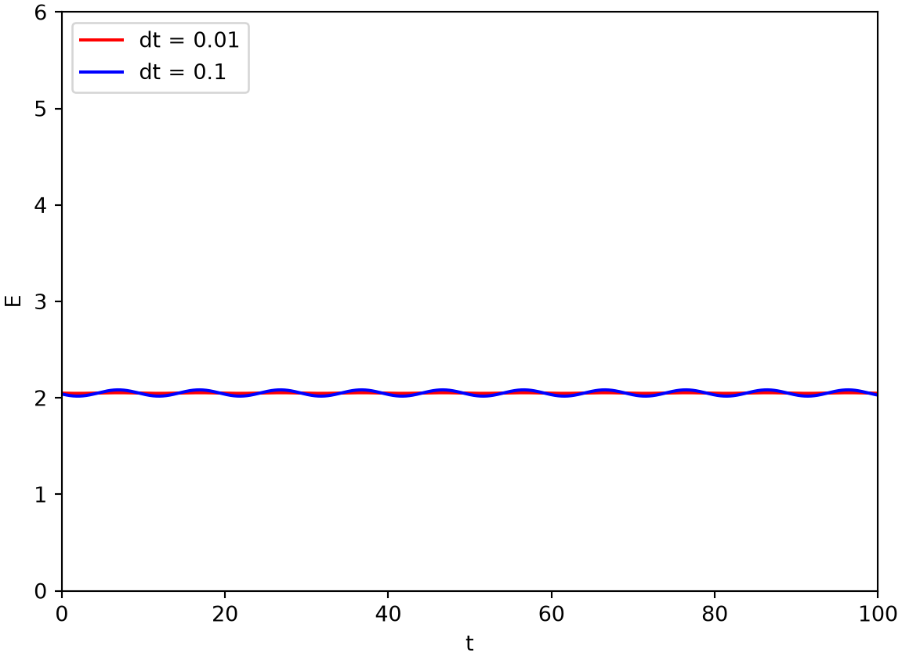
Unlike the Euler method, the leapfrog energy does not drift, even at the large step size. It is a symplectic, time-reversible method. One caveat affects the energy plot: leapfrog stores \(x_n\) and \(v_{n+1/2}\) at staggered times rather than at the same instant, so the massic energy computed from them shows a small oscillatory ripple when the step size is large.
5A.4 Velocity Verlet method
The leapfrog method never has \(x\) and \(v\) available at the same time. The velocity Verlet method fixes this by splitting the velocity update into two half steps that bracket the position update (Swope et al. 1982),
\[ \begin{aligned} v_{n+1/2} &= v_n + \tfrac{1}{2} h f_n \\ x_{n+1} &= x_n + h v_{n+1/2} \\ v_{n+1} &= v_{n+1/2} + \tfrac{1}{2} h f_{n+1} . \end{aligned} \]
NoteRecipe 5A.4.1
Objective. Integrate the harmonic oscillator with velocity Verlet, the standard molecular-dynamics integrator.
Model. A mass on a spring of stiffness k, d^2x/dt^2 = -k*x, written as the pair dx/dt = v, dv/dt = -k*x; the energy per unit mass e = 0.5*k*x^2 + 0.5*v^2 is exactly constant for the true motion.
Method. The velocity-Verlet integrator, splitting the velocity update into two half-steps around the position update, v_half = v + 0.5*dt*f, x_next = x + dt*v_half, v_next = v_half + 0.5*dt*f_next.
Test. k = 0.1, initial x0 = 1, v0 = 2, to t = 100; step sizes dt = 0.01 and dt = 0.1.
Show. Plots of x(t) and the energy e(t) for velocity Verlet at both step sizes.
Verification. Velocity Verlet conserves the energy at both step sizes and returns position and velocity at the same time points.
R implementation
# Velocity Verlet: half-step v, full-step x, half-step v
velocity_verlet <- function(f, t0, x0, v0, t.total, dt, ...){
t_all <- seq(t0, t.total, by = dt)
n_all <- length(t_all)
x_all <- numeric(n_all); v_all <- numeric(n_all)
x_all[1] <- x0; v_all[1] <- v0
for (i in 1:(n_all - 1)) {
v_half <- v_all[i] + 0.5 * dt * f(t_all[i], x_all[i], ...)
x_all[i+1] <- x_all[i] + dt * v_half
v_all[i+1] <- v_half + 0.5 * dt * f(t_all[i+1], x_all[i+1], ...)
}
return(cbind(t_all, x_all, v_all))
}
# trajectory at the small step size (x and v now share time points)
result_ho_vv <- velocity_verlet(f = f_ho, t0 = 0, x0 = 1, v0 = 2, t.total = 100, dt = dt1, k = k)
result_ho_vv2 <- velocity_verlet(f = f_ho, t0 = 0, x0 = 1, v0 = 2, t.total = 100, dt = dt2, k = k)
plot(result_ho_vv[,1], result_ho_vv[,2], type = "l", col = 2,
xlab = "t", ylab = "values", xlim = c(0,100), ylim = c(-10,10))
lines(result_ho_vv[,1], result_ho_vv[,3], col = 4)
legend("topleft", inset = 0.02, legend = c("x","v"), col = c(2,4), lty = 1, cex = 0.8)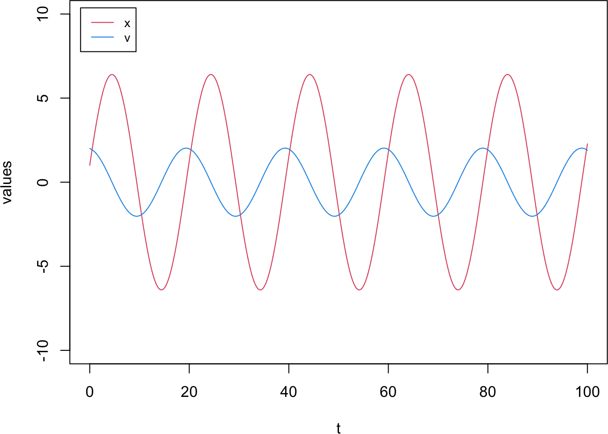
# massic energy: conserved at both step sizes
plot(result_ho_vv[,1], energy_ho(result_ho_vv, k), type = "l", col = 2,
xlab = "t", ylab = "E", xlim = c(0,100), ylim = c(0,6))
lines(result_ho_vv2[,1], energy_ho(result_ho_vv2, k), col = 4)
legend("topleft", inset = 0.02, legend = c("dt = 0.01","dt = 0.1"), col = c(2,4), lty = 1, cex = 0.8)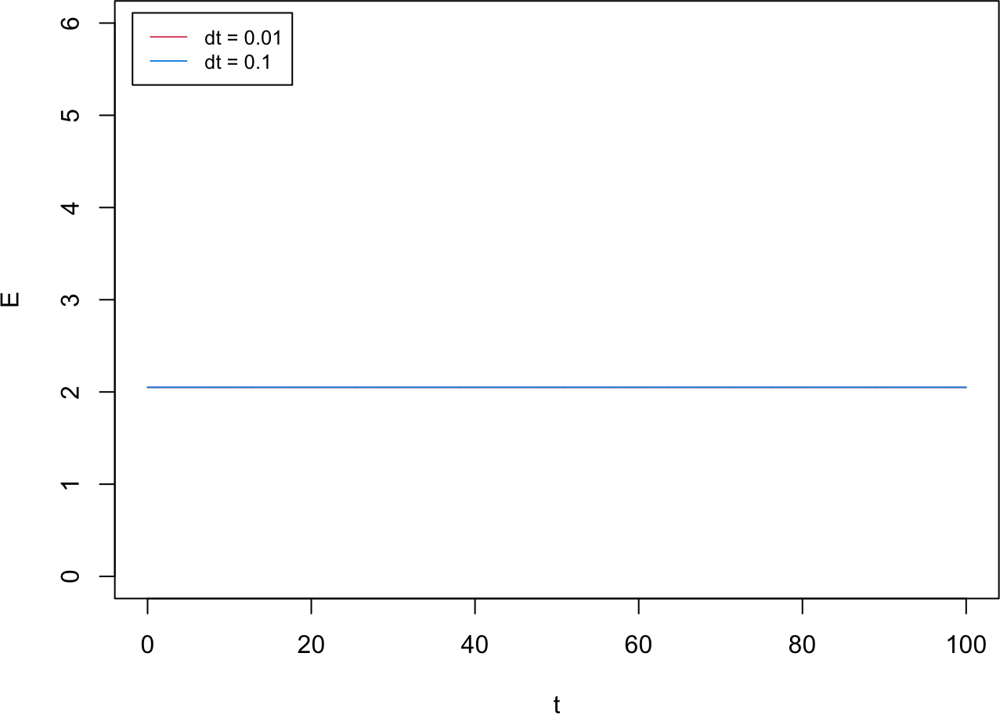
Python implementation
# Velocity Verlet: half-step v, full-step x, half-step v
def velocity_verlet(f, t0, x0, v0, t_total, dt, **kwargs):
t_all = np.arange(t0, t_total + dt, dt)
n_all = len(t_all)
x_all = np.zeros(n_all); v_all = np.zeros(n_all)
x_all[0] = x0; v_all[0] = v0
for i in range(1, n_all):
v_half = v_all[i-1] + 0.5 * dt * f(t_all[i-1], x_all[i-1], **kwargs)
x_all[i] = x_all[i-1] + dt * v_half
v_all[i] = v_half + 0.5 * dt * f(t_all[i], x_all[i], **kwargs)
return np.column_stack((t_all, x_all, v_all))
# trajectory at the small step size (x and v now share time points)
result_ho_vv = velocity_verlet(f_ho, 0, 1, 2, 100, dt1, k=k)
result_ho_vv2 = velocity_verlet(f_ho, 0, 1, 2, 100, dt2, k=k)
plt.plot(result_ho_vv[:,0], result_ho_vv[:,1], color="red", label="x")
plt.plot(result_ho_vv[:,0], result_ho_vv[:,2], color="blue", label="v")
plt.xlabel("t"); plt.ylabel("values"); plt.xlim(0,100); plt.ylim(-10,10)Text(0.5, 0, 't')
Text(0, 0.5, 'values')
(0.0, 100.0)
(-10.0, 10.0)plt.legend(loc="upper left"); plt.show()# massic energy: conserved at both step sizes
plt.plot(result_ho_vv[:,0], energy_ho(result_ho_vv, k), color="red", label="dt = 0.01")
plt.plot(result_ho_vv2[:,0], energy_ho(result_ho_vv2, k), color="blue", label="dt = 0.1")
plt.xlabel("t"); plt.ylabel("E"); plt.xlim(0,100); plt.ylim(0,6)Text(0.5, 0, 't')
Text(0, 0.5, 'E')
(0.0, 100.0)
(0.0, 6.0)plt.legend(loc="upper left"); plt.show()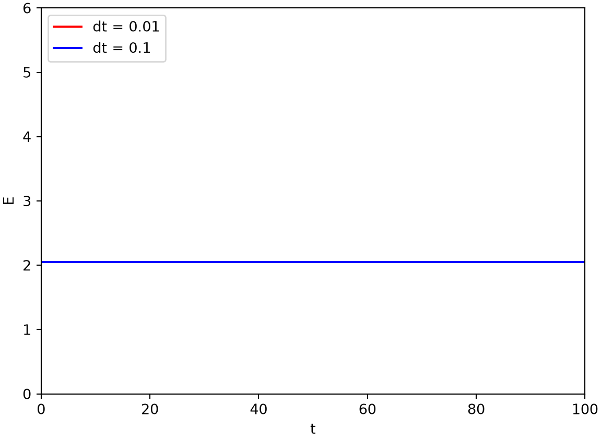
Velocity Verlet conserves the massic energy at both step sizes and returns \(x\) and \(v\) at the same time points, which is why it is the standard workhorse integrator in molecular dynamics.
Position Verlet method
By symmetry, one can instead split the position update into two half steps around a full velocity step, giving the position Verlet method. Working out its update equations is left as an exercise.
5A.5 Verlet method
If the velocity is not needed as an output, the original Verlet method integrates the position alone (Verlet 1967). Adding the Taylor expansions of \(x_{n+2}\) and \(x_n\) about \(x_{n+1}\) cancels the velocity and the odd-order terms, leaving
\[ x_{n+2} = 2 x_{n+1} - x_n + h^2 f_{n+1} . \]
The scheme needs two starting positions; the second is obtained from the initial position and velocity by
\[ x_1 = x_0 + h v_0 + \tfrac{1}{2} h^2 f_0 . \]
NoteRecipe 5A.5.1
Objective. Integrate the harmonic oscillator with the original position-only Verlet method.
Model. A mass on a spring of stiffness k, d^2x/dt^2 = -k*x, written as the pair dx/dt = v, dv/dt = -k*x; the energy per unit mass e = 0.5*k*x^2 + 0.5*v^2 is exactly constant for the true motion. This method does not store the velocity.
Method. The Verlet integrator, advancing position from the two previous positions, x_{n+2} = 2*x_{n+1} - x_n + dt^2*f_{n+1}, with a startup step x_1 = x0 + dt*v0 + 0.5*dt^2*f0.
Test. k = 0.1, initial x0 = 1, v0 = 2, to t = 100; step sizes dt = 0.01 and dt = 0.1.
Show. A plot of x(t) for Verlet at both step sizes.
Verification. Verlet reproduces the oscillation at both step sizes while storing only positions, which is why it and velocity Verlet underlie most practical MD codes.
R implementation
# Verlet integrator: position only, no explicit velocity
verlet <- function(f, t0, x0, v0, t.total, dt, ...){
t_all <- seq(t0, t.total, by = dt)
n_all <- length(t_all)
x_all <- numeric(n_all)
x_all[1] <- x0
x_all[2] <- x0 + dt * v0 + 0.5 * dt * dt * f(t_all[1], x_all[1], ...)
for (i in 2:(n_all - 1)) {
x_all[i+1] <- 2 * x_all[i] - x_all[i-1] + dt * dt * f(t_all[i], x_all[i], ...)
}
return(cbind(t_all, x_all)) # columns: t, x
}
result_ho_v <- verlet(f = f_ho, t0 = 0, x0 = 1, v0 = 2, t.total = 100, dt = dt1, k = k)
result_ho_v2 <- verlet(f = f_ho, t0 = 0, x0 = 1, v0 = 2, t.total = 100, dt = dt2, k = k)
plot(result_ho_v[,1], result_ho_v[,2], type = "l", col = 2,
xlab = "t", ylab = "x", xlim = c(0,100), ylim = c(-10,10))
lines(result_ho_v2[,1], result_ho_v2[,2], col = 4)
legend("topleft", inset = 0.02, legend = c("dt = 0.01","dt = 0.1"), col = c(2,4), lty = 1, cex = 0.8)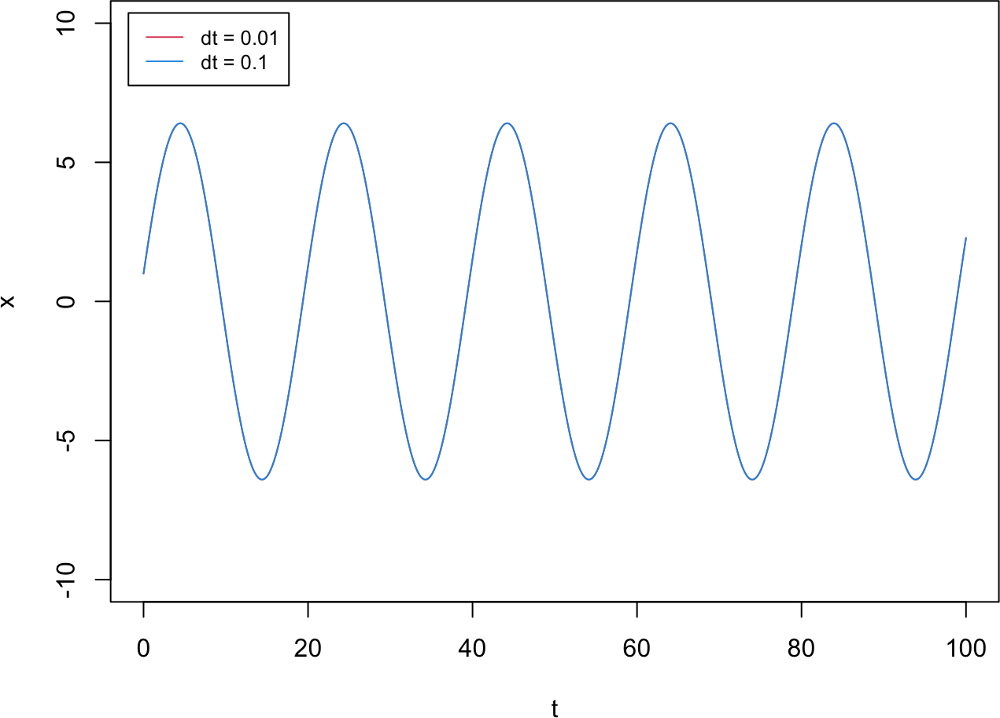
Python implementation
# Verlet integrator: position only, no explicit velocity
def verlet(f, t0, x0, v0, t_total, dt, **kwargs):
t_all = np.arange(t0, t_total + dt, dt)
n_all = len(t_all)
x_all = np.zeros(n_all)
x_all[0] = x0
x_all[1] = x0 + dt * v0 + 0.5 * dt * dt * f(t_all[0], x0, **kwargs)
for i in range(1, n_all - 1):
x_all[i+1] = 2 * x_all[i] - x_all[i-1] + dt * dt * f(t_all[i], x_all[i], **kwargs)
return np.column_stack((t_all, x_all)) # columns: t, x
result_ho_v = verlet(f_ho, 0, 1, 2, 100, dt1, k=k)
result_ho_v2 = verlet(f_ho, 0, 1, 2, 100, dt2, k=k)
plt.plot(result_ho_v[:,0], result_ho_v[:,1], color="red", label="dt = 0.01")
plt.plot(result_ho_v2[:,0], result_ho_v2[:,1], color="blue", label="dt = 0.1")
plt.xlabel("t"); plt.ylabel("x"); plt.xlim(0,100); plt.ylim(-10,10)Text(0.5, 0, 't')
Text(0, 0.5, 'x')
(0.0, 100.0)
(-10.0, 10.0)plt.legend(loc="upper left"); plt.show()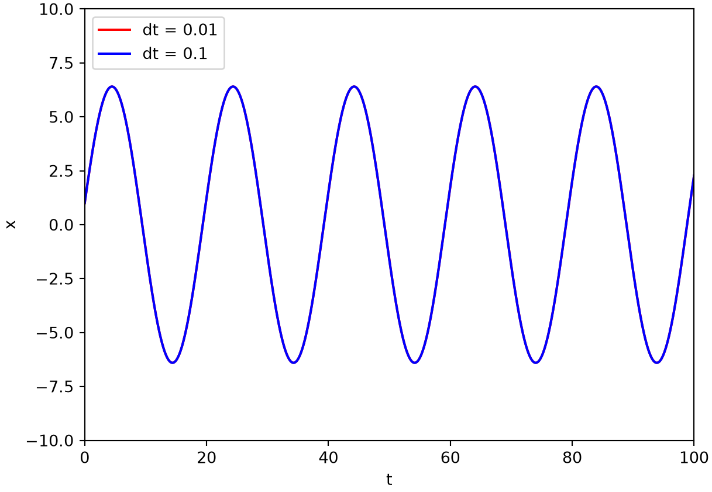
The Verlet method reproduces the oscillation at both step sizes while storing only positions, which is why it and its velocity Verlet variant underlie most practical MD codes. We extend these integrators to systems of many interacting particles in Part 5B.